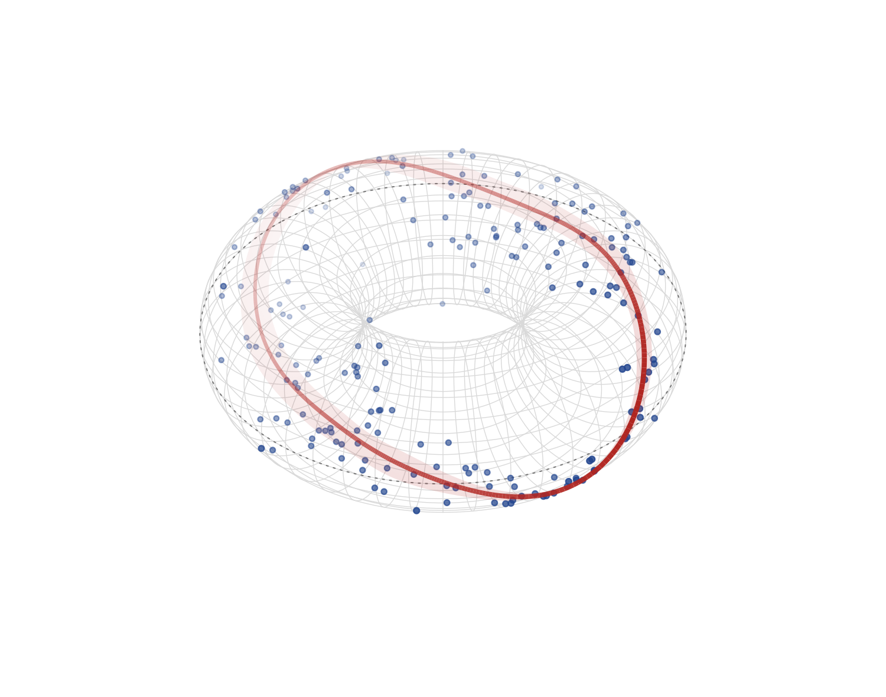

Circular-response location-scale families for mgcv’s GAM engine: fit penalized-spline regression models where the response is an angle, with every distribution parameter getting its own smooth.

Circular–circular regression on its natural canvas: predictor angle around the ring, response angle around the tube, and the fitted mean direction (red, with a 95% delta-method ribbon) winding once around the torus — gam(list(theta ~ s(phi, bs="cc"), ~ s(phi, bs="cc")), family = pnlss()). Code in the torus article.
Documentation: https://huangziwei.github.io/circlss/ — worked examples for all three response–predictor geometries: circular–linear (cylinder), linear–circular (cylinder, mgcv-native), circular–circular (torus).
Three families so far: the von Mises vmlss() (tan-half location link, log concentration — the reference implementation), the projected normal pnlss() (identity-linked Cartesian mean components — no branch cut, so the fitted direction can sweep and wind around the full circle, the natural choice for circular–circular regression), and the wrapped Cauchy wclss() (heavy-tailed counterpart of the von Mises, logit-linked mean resultant length — the robust choice under angular outliers). The remaining families (wrapped normal, Jones–Pewsey, sine-skewed JP, cardioid, Cartwright, Kato–Jones) arrive one per 0.0.x release, ported from pycircstat2 by the same recipe; v0.1.0 is the externally-anchored validation release.
Install
# released versions: not yet on CRAN; install from GitHub
remotes::install_github("huangziwei/circlss")
# or from a local checkout
install.packages("path/to/circlss", repos = NULL, type = "source")Requires mgcv >= 1.9.4 (R >= 4.5 recommended).
Use
The families are mgcv general families: pass gam() a list of two formulas, one per distribution parameter — for vmlss() the mean direction (Fisher–Lee tan-half link) and the log concentration; for pnlss() the two Cartesian components of the mean vector.
library(mgcv)
library(circlss)
# circular response, linear covariate -- distributional von Mises:
# mean direction and log-concentration each get their own smooth
b <- gam(list(theta ~ s(x), # location, tan-half link
~ s(x)), # log concentration
family = vmlss(), data = dat, method = "REML")
summary(b)
plot(b, pages = 1)
predict(b, newdata = nd, type = "response") # columns: mu (radians), kappa
# circular-circular regression -- projected normal: the fitted direction
# atan2(mu2, mu1) has no branch cut and can wind around the circle
b2 <- gam(list(theta ~ s(phi, bs = "cc"), ~ s(phi, bs = "cc")),
family = pnlss(), data = dat, method = "REML",
knots = list(phi = c(-pi, pi)))
fv <- fitted(b2) # columns: mu1, mu2
direction <- atan2(fv[, 2], fv[, 1]) # fitted mean directionFor circular–circular data prefer pnlss(): the tan-half map in vmlss() cannot wind (winding number zero) nor cross the antipode of the response origin, so with a circular covariate it suits oscillation around a reference direction, not rotation-type association — the torus article shows both.
The response is in radians, any branch ([0, 2pi) or (-pi, pi]).
Log-likelihood derivatives are implemented to fourth order, so full Newton REML works (as do optimizer = "efs" and the other general-family criteria); everything mgcv provides for general families — summary, plot, predict, gam.check, AIC, smooth selection, tensor smooths, random effects — comes for free.
Parity with pycircstat2
The derivative algebra is transcribed from pycircstat2’s FD-verified implementations, and every release is differentially tested against it: the same models on the same data (file-exchanged, Newton-REML both sides) must agree within pinned tolerances. At v0.0.1, the battery agrees to machine precision (~1e-11) for parametric and cyclic-spline models, and to ~3e-5 (smoothing parameters, log-likelihood) with fitted curves within 2e-6 radians for thin-plate models, where basis eigen-decomposition makes bitwise agreement impossible. The REML criteria match to ~1e-9 after normalizing conventions (hea reports -2 log REML, mgcv -log REML).
dev/parity/run.sh reruns the whole side-by-side comparison; the frozen battery is asserted hermetically in tests/testthat/test-vmlss-parity.R.